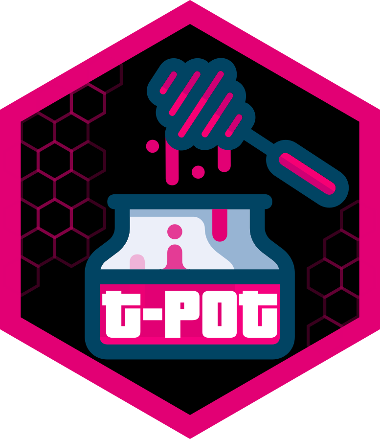

T-Pot
24.04.2
Last 24 hours
Last 24 hours
a point every 30 minutes
Last hour
a point every minute
Last minute
a point every 2 seconds
Comb
Comb
a cell lights up for every attack
Honey
a drop falls into the pot for every attack
Network
a node flashes for every attack
Attacks in the last 24 hours
connecting
latest attack
sources
honeypots hit
Attack Map
Attacks on a world map, as they happen
Kibana
Dashboards and search over every event
SecurityMeter
Attacks on the honeypots of Deutsche Telekom

T-Pot on GitHub
Source, issues and releases
CyberChef
Decode, decrypt and analyse payloads
Elasticvue
Browse the Elasticsearch indices
Attacks per honeypot, last 24 hours
Top sources, last 24 hours
Sensors, last 24 hours